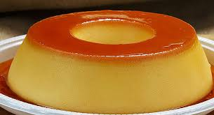

Receitas da Vovó
Página com as receitas da vovozinha
Clique aqui para voltar
Receita de Pudim

Ingredientes:
- Leite Condensado
- Manteiga
- Ovo
Modo de Fazer:
- Coloque o leite condençado na panela
- Adicione a manteiga e mexa até derreter
- Adicione o ovo
- Mexa até que fique com a consistencia esperada